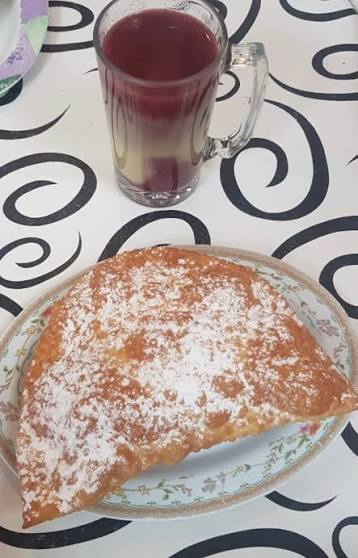

Api con Pastel

Pastel, dessert combines the softness of a spongy cake with the
characteristic sprinkled sugar and Api, a hot drink based on purple
corn and flavored with cinnamon and cloves.
Ingredients
- 4 cup all-purpose flour
- 2 tablespoons hot butter
- 1 tablespoon of sugar
- ½ tablespoon of salt
- Required amount of hot water
- ¼ kg Mennonite cheese
Steps
- In a container, place the flour forming a volcano and add the sugar, the salt,
the hot water in the center and the hot butter previously melted until it begins
to smoke on the water.
- Mix from the center outwards with the help of a spoon until you obtain a homogeneous
dough. Knead for 2 minutes. If the dough is too soft, you can add a little more flour
to make it firmer.
- Form balls of the appropriate size for your cupcakes.
- Cover the balls and let them rest for 30 minutes; This will help bubbles
form in the dough.
- Roll out each ball of dough to form a large, as flat oval as possible. Add grated
cheese to one side of the dough.
- Brush the edges of the dough with a little cold water and close the cupcakes, pinching
the edges or pressing them with a fork to seal them.
- Heat oil in a frying pan over high heat and cook the cupcakes. You will notice that
they puff up as they cook, at which point you should turn them over.
- Remove the cupcakes when they are golden brown on both sides and sprinkle ground
sugar on top before enjoying.
Home